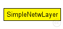
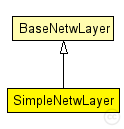

This documentation is released under the Creative Commons license
This documentation is released under the Creative Commons license(no description)
The following diagram shows usage relationships between types. Unresolved types are missing from the diagram. Click here to see the full picture.
The following diagram shows inheritance relationships for this type. Unresolved types are missing from the diagram. Click here to see the full picture.
| Name | Type | Description |
|---|---|---|
| BaseNetwLayer | simple module |
Base module for every network layer module |
| Name | Type | Default value | Description |
|---|---|---|---|
| notAffectedByHostState | bool | false | |
| coreDebug | bool | false |
debug switch for core framework |
| stats | bool | false |
stats switch |
| headerLength | int | 12 bit |
length of the network packet header (in bits) |
| ip | double | ||
| isSwitch | bool | ||
| maxTtl | double | ||
| boredTime | double |
| Name | Value | Description |
|---|---|---|
| class | SimpleNetwLayer |
| Name | Direction | Size | Description |
|---|---|---|---|
| upperLayerIn | input |
from upper layer |
|
| upperLayerOut | output |
to uppe layer |
|
| upperControlIn | input |
control from upper layer |
|
| upperControlOut | output |
control to upper layer |
|
| lowerLayerIn | input |
from lower layer |
|
| lowerLayerOut | output |
to lower layer |
|
| lowerControlIn | input |
control from lower layer |
|
| lowerControlOut | output |
control to lower layer |
simple SimpleNetwLayer extends BaseNetwLayer { parameters: @class(SimpleNetwLayer); headerLength = 12 bit; double ip; bool isSwitch; double maxTtl; double boredTime; }
This documentation is released under the Creative Commons license